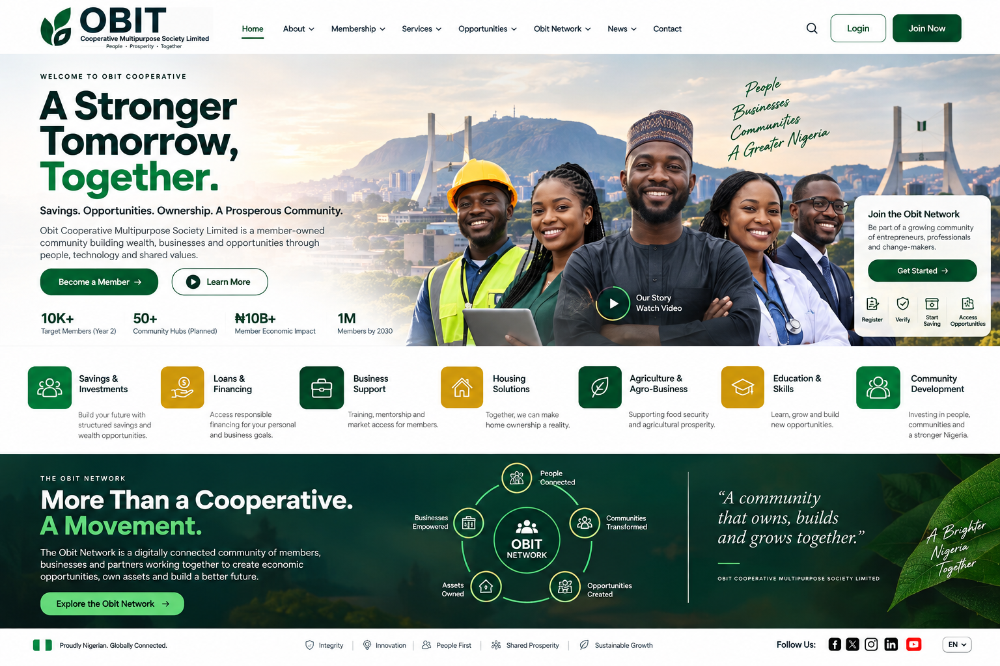

₦
Structured Savings
Build stronger financial habits through approved cooperative savings and contribution programmes.
Obit Cooperative is a member-owned community helping people improve financial discipline, strengthen businesses, learn practical skills and access useful opportunities through a clear, technology-enabled structure.
Obit Technologies Multipurpose Cooperative Society Limited brings individuals and businesses together around structured participation, practical knowledge, community support and approved economic opportunities.
Obit Technologies provides the technology and support infrastructure behind the digital experience. The Cooperative remains the member-owned community.

You do not need to understand every cooperative programme before joining. Start with the goal closest to you and we will guide you through the relevant membership journey.
Create a more structured approach to saving, planning and useful member opportunities.
Start this path → Traders & MSMEsAccess practical business knowledge, community connections and approved growth opportunities.
Start this path → Artisans & professionalsStrengthen your capability, visibility and access to useful networks.
Start this path → Transport workersUse a structured community pathway for financial discipline and approved opportunities.
Start this path → Farmers & agribusinessFollow relevant programmes, knowledge and community opportunities when available.
Start this path → Not sure yet?Create your profile and begin with a simple orientation to understand the paths available.
Become a member →Availability and eligibility vary by programme. Membership does not guarantee financing, funding or returns.
Build stronger financial habits through approved cooperative savings and contribution programmes.
Practical knowledge around marketing, sales, operations, records and business readiness.
Financial literacy, digital capability and useful member education.
Curated opportunities with clearer eligibility, document and next-step guidance for members.
Connect with people, businesses and approved community initiatives.
Participate in programmes that fit your needs when eligibility and required approvals are met.
The network brings the community together so members can discover useful knowledge, business connections, local support and approved opportunities without having to navigate everything alone.
We curate useful business, development, funding, tender, training and technology opportunities and explain them in plain language.
For membership, portal or general cooperative enquiries, contact the support team. For the fastest membership journey, start your profile online.
Join a member-owned community built around structure, support, technology and shared progress.